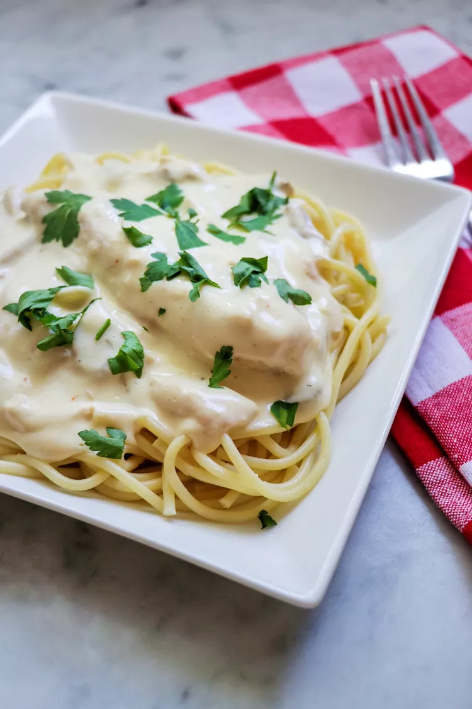

Back
Slow Cooked Chicken Alfredo

Easy recipe for delicious, rich and creamy chicken alfredo slow cooked.
Ingredients
- cooking spray
- 4 skinless, boneless chicken breast halves
- 1/4 cup water
- 1 package dry italian-style salad dressing mix
- 1 garlic clove pressed
- 1 package cream cheese, softened
- 1 can condensed cream of chicken soup
- 1 can chopped, canned mushrooms
- 1 package spaghetti
- 1 tablespoon chopped fresh parsley
Directions
- Spray the crock of a slow cooker with nonstick cooking spray. Place chicken breasts in the crock. Combine water and Italian dressing mix in a small bowl. Pour over chicken; sprinkle with garlic, cover, and cook on Low for 4 hours.
- After 4 hours, whisk cream cheese and condensed soup together in a bowl. Pour over chicken. Stir in mushrooms. Cover and cook on Low for 1 hour.
- Fill a large pot with lightly salted water and bring to a rolling boil over high heat. Stir in spaghetti, and return to a boil. Cook pasta uncovered, stirring occasionally, until cooked through but still firm to the bite, about 12 minutes. Drain well.
- To serve, spoon chicken and sauce over hot cooked pasta and sprinkle with parsley.